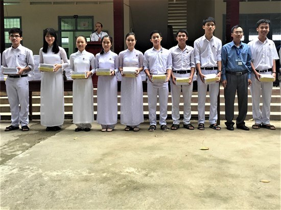

Trường THPT Nguyễn Diêu đạt chuẩn Quốc gia
Trường THPT Nguyễn Diêu ra đời nhằm tạo điều kiện thuận lợi cho học sinh các xã ở mạn Đông huyện Tuy Phước gồm: Phước Sơn, Phước Thuận, Phước Hiệp. Sau nhiều nỗ lực vượt mọi khó khăn, tháng 12.2016, UBND tỉnh đã ra Quyết định công nhận trường THPT Nguyễn Diêu đạt chuẩn Quốc gia.

Hiệu trưởng Nguyễn Văn Tho phát thưởng cho học sinh lớp 12 đạt giải học sinh giỏi cấp tỉnh năm học 2016-2017.
Thầy Nguyễn Văn Tho, Hiệu trưởng Trường THPT Nguyễn Diêu, chia sẻ: “Tuy có những lúc gặp muôn vàn khó khăn khi đội ngũ giáo viên luôn biến đổi, cơ sở vật chất còn nhiều thiếu thốn, nhưng nhờ tinh thần đoàn kết, nhờ nhân dân ủng hộ và truyền thống hiếu học người dân khu Đông Tuy Phước, trường phát triển vượt bậc. Những năm qua, trường đã đạt nhiều thành tích đáng khích lệ như 1 học sinh giỏi đạt giải Ba Quốc gia môn Lịch sử năm 2010, 1 học sinh đỗ thủ khoa toàn quốc tốt nghiệp THPT năm 2011 và 1 học sinh đỗ thủ khoa tốt nghiệp THPT toàn tỉnh năm 2012”.
Nhận xét về Trường THPT Nguyễn Diêu, Giám đốc Sở GD&ĐT Đào Đức Tuấn ghi nhận: “Là một trong những trường nằm trong vùng rốn lũ, thường xuyên bị ảnh hưởng của thiên tai, nhưng thầy trò trường THPT Nguyễn Diêu đã nỗ lực vượt mọi khó khăn, hoàn thành tốt nhiệm vụ, đạt danh hiệu trường THPT chuẩn Quốc gia. Mong rằng thời gian tới, cán bộ, giáo viên, nhân viên toàn trường nỗ lực vươn tới những thành tích cao hơn, góp phần vào sự phát triển chung của toàn ngành”.